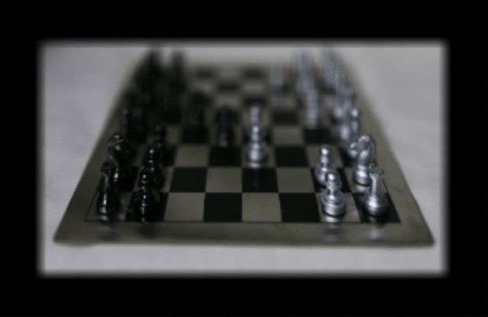
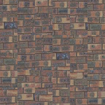
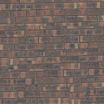

For the CS 194-26 final project, we choose to do three projects - Augmented Reality, Light Field Camera, and Image Quilting.
Augmented Reality
Hover over gifs to make bigger
Video of Box
Tracked Control Points
Simulated Box in AR
Light Field Camera
Overview
In this project we explore the idea of using many cameras to simulate different properties like focal length/distance and aperture width. We further try to apply this technique to our own dataset (an array of images of a dining table) to see how robust our simulation mechanisms are (more on that below).
Depth Refocusing
To refocus the depth, we have to shift each image so that each of them are centered around the same point, and then take the average of the shifted images.

Varying the focus on a chessboard gif
Aperture Adjustment
To adjust the aperture, we adjusted which images were included in the final image. Specifically, to make the aperture smaller (ie. more items in focus), we reduced the number of images used, including only those near the center of the light field.
Varying the aperture on a chessboard gif
Summary
We learned a lot about light fields from this project. The most interesting thing that we learned was while looking at different data sets provided. In one data set of jelly-beans we noticed that the x and y axis corresponded to lateral and vertical rotations of the camera. In this case, the effects of our refocusing were actually reversed (a mean of all images focused on the close-by object, and shifting the images before averaging moved the focus backwards). This was an interesting observation that deepend our understanding of light fields.
Bells & Whistles - Using custom data
Here we collected a custom dataset by taking photos of a scene from different spots to make up a light field.
Neither focusing nor aperture adjustment worked well with our custom dataset. This is because no matter how hard I try, its almost impossible to keep my phone pointing straight for every single image. The rotation introduced so much noise that objects in the distance did not move all that much less than objects nearby from frame to frame.
Image Quilting
In this project, taking a sample image of a texture, we extend out that texture to cover a larger area, and can transfer the texture to an image.
Texture sample image
Texture sample image
Randomly Sampled Texture
First, we can geneate the texture by taking random patches from the sample image and mosaicing them onto a canvas.

Randomly sampled texture
This produces results with seems, and can be improved by overlapping the patches and matching them with some metric.
Overlapping Patches
By when appending a new patch, we can make it more seamless by finding another patch that closely matches the first patch in the overlapping region, and by overlapping the patches by 50%. To pick out the next patch, find the one with the lowest sum of squared differences between itself and first patch.

Overlapping patches
Texture Transfer
First we lay down one (random) tile in the top left of the image, then for each subsequent tile placement, we score all possible tiles as the sum of the SSD between the possible tile and the existing output image (masked so that it only evaluates a score on the overlap) and between the possible tile and the target image. We then sort all possible tiles by score, and randomly choose among the best 100.